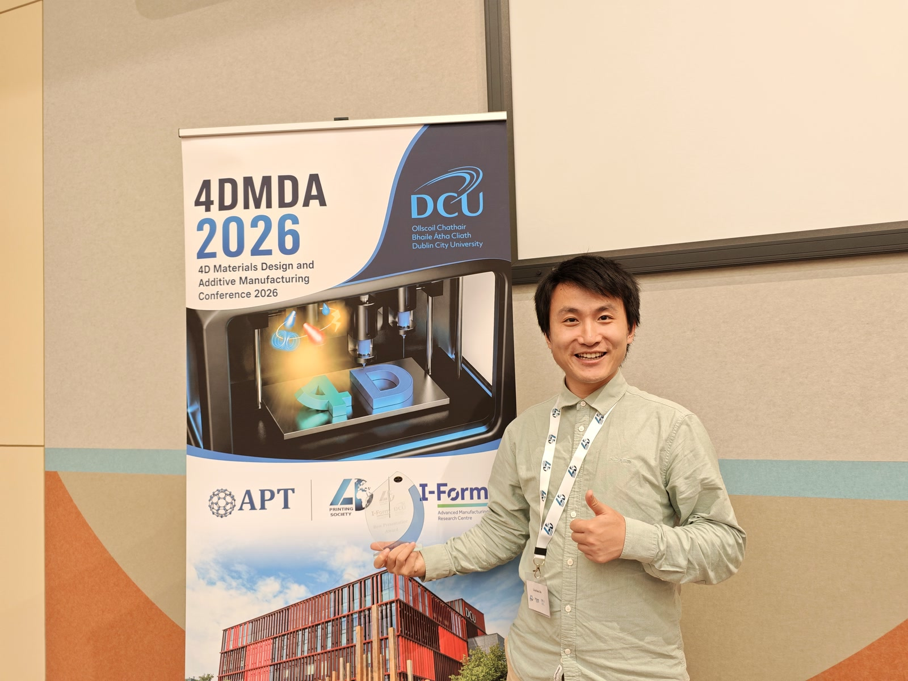
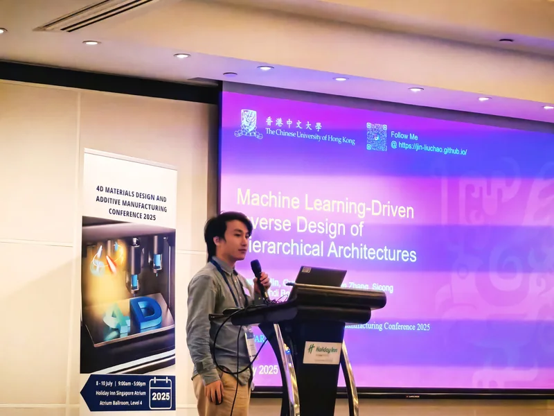
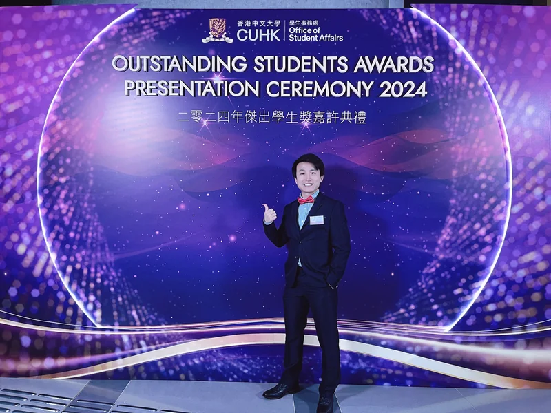
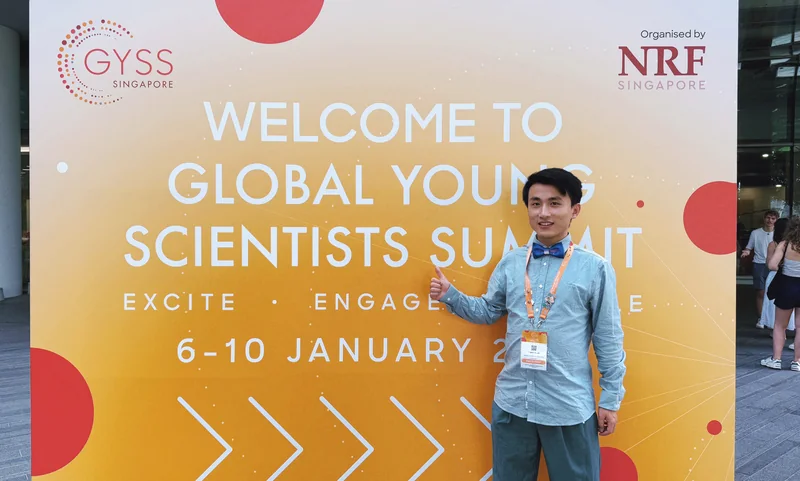

Best Presentation Award at 4DMDA 2026
Liuchao received the Best Presentation Award at the 5th International Conference on 4D Materials Design and Additive Manufacturing, held in Dublin, Ireland.
News & milestones
Selected recognition, research visits, invited talks, and scientific gatherings—presented with clear dates and concise context.
2026
Recent presentation and poster recognition, international research exchange, and academic support.

Liuchao received the Best Presentation Award at the 5th International Conference on 4D Materials Design and Additive Manufacturing, held in Dublin, Ireland.
Received the Best Poster Award at the 35th International Conference on Adaptive Structures and Technologies in Hong Kong.
Received the Reaching Out Award from the HKSAR Government Scholarship Fund in support of international academic exchange and professional development.
Advanced Functional Materials published a unified review of machine-learning-based inverse design across architected, thermal, optical, biomedical, and energy materials. Weihao Lin and Liuchao Jin contributed equally.
Read the review2025
Sharing research with specialist communities and connecting with scientists across disciplines.

Presented “Machine Learning-Driven Inverse Design of Hierarchical Architectures” at the 4th 4DMDA conference in Singapore.
View conference program
Recognized by CUHK for academic achievement, research, leadership, and contribution to the university community.
Read CUHK's award feature
Joined early-career researchers and eminent scientists in Singapore for cross-disciplinary lectures, panels, and small-group conversations.
Explore official highlightsSpeaking & collaboration
Share the context, audience, and timing in a short email, or review the complete record in the current CV.